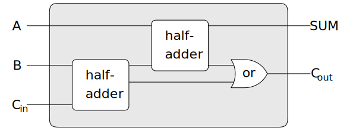

Designing complex digital systems, such as computers, is an important
engineering activity. Digital systems are constructed by
interconnecting simple elements. Although the behavior of these
individual elements is simple, networks of them can have very complex
behavior. Computer simulation of proposed circuit designs is an
important tool used by digital systems engineers. In this section we
design a system for performing digital logic simulations. This system
typifies a kind of program called an
event-driven simulation, in
which actions (events) trigger further events that happen
at a later time, which in turn trigger more events, and so on.
Our computational model of a circuit will be composed of objects that
correspond to the elementary components from which the circuit is
constructed. There are
wires, which carry
digital signals. A digital signal may at any moment have only one of two
possible values,
0 and 1. There are also various types of digital
function boxes, which connect wires carrying input signals to other output
wires. Such boxes produce output signals computed from their input
signals. The output signal is
delayed by a time that depends on the
type of the function box. For example, an
inverter is a
primitive function box that inverts its input. If the
input signal to an inverter changes to 0, then one inverter-delay
later the inverter will change its output signal to 1. If the input
signal to an inverter changes to 1, then one inverter-delay later
the inverter will change its output signal to 0. We draw an inverter
symbolically as in figure 3.47. An
and-gate,
also shown in figure 3.47, is a primitive
function box with two inputs and one output. It drives its output signal
to a value that is the
logical and of the inputs. That is, if both
of its input signals become 1, then one and-gate-delay time
later the and-gate will force its output signal to be 1; otherwise the
output will be 0. An
or-gate is a similar two-input primitive function
box that drives its output signal to a value that is the
logical or of the inputs. That is, the output will become 1 if at least one
of the input signals is 1; otherwise the output will become 0.
Figure 3.47 Primitive functions in the digital logic simulator.
We can connect primitive functions together to construct more complex
functions. To accomplish this we wire the outputs of some
function boxes to the inputs of other function boxes. For example,
the
half-adder circuit shown in
figure 3.48 consists of an
or-gate, two and-gates, and an inverter. It takes two input signals,
$A$ and $B$, and has
two output signals, $S$ and $C$.
$S$ will become 1
whenever precisely one of $A$ and $B$
is 1, and $C$ will become 1 whenever
$A$ and $B$ are both 1. We can see
from the figure that, because of the
delays involved, the outputs may be generated at different times.
Many of the difficulties in the design of digital circuits arise from
this fact.
We will now build a program for modeling the digital logic circuits we
wish to study. The program will construct computational objects
modeling the wires, which will hold the signals. Function
boxes will be modeled by
proceduresfunctions
that enforce the correct relationships among the signals.
One basic element of our simulation will be a
procedurefunctionmake-wire,make_wire,
which constructs wires. For example, we can construct six wires as follows:
Original
JavaScript
(define a (make-wire))
(define b (make-wire))
(define c (make-wire))
(define d (make-wire))
(define e (make-wire))
(define s (make-wire))
const a = make_wire();
const b = make_wire();
const c = make_wire();
const d = make_wire();
const e = make_wire();
const s = make_wire();
We attach a function box to a set of wires by calling a
procedurefunction
that constructs that kind of box. The arguments to the constructor
procedurefunction
are the wires to be attached to the box. For example, given
that we can construct and-gates, or-gates, and inverters, we can wire
together the half-adder shown in figure 3.48:
Original
JavaScript
(or-gate a b d)
ok
or_gate(a, b, d);
"ok"
Original
JavaScript
(and-gate a b c)
ok
and_gate(a, b, c);
"ok"
Original
JavaScript
(inverter c e)
ok
inverter(c, e);
"ok"
Original
JavaScript
(and-gate d e s)
ok
and_gate(d, e, s);
"ok"
Better yet, we can explicitly name this operation by defining a
procedurefunctionhalf-adderhalf_adder
that constructs this circuit, given the four
external wires to be attached to the half-adder:
Original
JavaScript
(define (half-adder a b s c)
(let ((d (make-wire)) (e (make-wire)))
(or-gate a b d)
(and-gate a b c)
(inverter c e)
(and-gate d e s)
'ok))
function half_adder(a, b, s, c) {
const d = make_wire();
const e = make_wire();
or_gate(a, b, d);
and_gate(a, b, c);
inverter(c, e);
and_gate(d, e, s);
return "ok";
}
The advantage of making this definition is that we can use
half-adderhalf_adder
itself as a building block in creating more complex
circuits. Figure 3.49, for example, shows a
full-adder composed of two half-adders and an or-gate.[1] We can construct a
full-adder as follows:
Original
JavaScript
(define (full-adder a b c-in sum c-out)
(let ((s (make-wire))
(c1 (make-wire))
(c2 (make-wire)))
(half-adder b c-in s c1)
(half-adder a s sum c2)
(or-gate c1 c2 c-out)
'ok))
Having defined
full-adderfull_adder
as a
procedure,function,
we can now use it as a building block for creating still more complex
circuits. (For example, see exercise 3.30.)

In essence, our simulator provides us with the tools to construct a
language of circuits. If we adopt the general perspective on
languages with which we approached the study of
LispJavaScript
in section 1.1,
we can say that the primitive function boxes form the primitive
elements of the language, that wiring boxes together provides a means
of combination, and that specifying wiring patterns as
proceduresfunctions
serves as a means of abstraction.
Primitive function boxes
The primitive function boxes
implement the forces by which a
change in the signal on one wire influences the signals on other
wires. To build function boxes, we use the following operations on
wires:
(get-signal wire):get_signal($wire$)
returns the current value of the signal on the wire.
(set-signal! wire new-value):
set_signal($wire$, $new$-$value$):
changes the value of the signal on the wire to the new value.
(add-action! wire procedure-of-no-arguments):
add_action($wire$, $function$-$of$-$no$-$arguments$):
asserts that the designated
procedurefunction
should be run whenever the signal on the wire changes value. Such
proceduresfunctions
are the vehicles by which changes in the signal value on the wire are
communicated to other wires.
In addition, we will make use of a
procedurefunctionafter-delayafter_delay
that takes a time delay and a
procedurefunction
to be run and executes the given
procedurefunction
after the given delay.
Using these
procedures,functions,
we can define the primitive digital logic functions. To connect an input
to an output through an inverter, we use
add-action!add_action
to associate with the input wire a
procedurefunction
that will be run whenever the signal on the input wire changes value.
The
procedurefunction
computes the
logical-notlogical_not
of the input signal, and then, after one
inverter-delay,inverter_delay,
sets the output signal to be this new value:
function inverter(input, output) {
function invert_input() {
const new_value = logical_not(get_signal(input));
after_delay(inverter_delay,
() => set_signal(output, new_value));
}
add_action(input, invert_input);
return "ok";
}
function logical_not(s) {
return s === 0
? 1
: s === 1
? 0
: error(s, "invalid signal");
}
An and-gate is a little more complex. The action
procedurefunction
must be run if
either of the inputs to the gate changes. It computes the
logical-and
(using a procedure analogous to
logical-not)
logical_and
(using a function analogous to
logical_not)
of the values of the signals on the input wires and sets up a change
to the new value to occur on the output wire after one
and-gate-delay.and_gate_delay.
Exercise 3.29
Another way to construct an
or-gate is as a compound digital logic
device, built from and-gates and inverters. Define a
procedurefunctionor-gateor_gate
that accomplishes this. What is the delay time of the
or-gate in terms of
and-gate-delayand_gate_delay
and
inverter-delay?inverter_delay?
(contributed by github user taimoon)
Idea: ~(~a & ~b) = nand(~a, ~b) = ~~a | ~~b = a | b
function nand_gate(a1, a2, out){
const tmp = make_wire();
and_gate(a1, a2, tmp);
inverter(tmp, out);
}
function or_gate(a1, a2, out){
const not_a1 = make_wire();
const not_a2 = make_wire();
inverter(a1, not_a1);
inverter(a2, not_a2);
nand_gate(not_a1, not_a2, out);
}
The delay time of the nand-gate is
nand_gate_delay = and_gate_delay + inverter_delay and the delay time of the or-gate above is
or_gate_delay = nand_gate_delay + inverter_delay = and_gate_delay + 2 * inverter_delay.
Exercise 3.30
Figure 3.50 shows a
ripple-carry adder formed by stringing
together $n$ full-adders.
This is the simplest form of parallel adder
for adding two $n$-bit binary numbers.
The inputs $A_{1}$,
$A_{2}$,
$A_{3}$, …,
$A_{n}$ and
$B_{1}$,
$B_{2}$,
$B_{3}$, …,
$B_{n}$
are the two binary numbers to be added (each
$A_{k}$ and
$B_{k}$
is a 0 or a 1). The circuit generates
$S_{1}$,
$S_{2}$,
$S_{3}$,
…,
$S_{n}$,
the $n$ bits of the sum, and
$C$, the carry from
the addition. Write a
procedurefunctionripple-carry-adderripple_carry_adder
that generates this circuit. The
procedurefunction
should take as arguments three lists of
$n$ wires each—the
$A_{k}$, the
$B_{k}$, and the
$S_{k}$—and
also another wire $C$.
The major drawback of the ripple-carry adder is the need to wait for the
carry signals to propagate. What is the delay needed to obtain the
complete output from an $n$-bit ripple-carry
adder, expressed in terms of the delays for and-gates, or-gates, and
inverters?
There is currently no solution available for this exercise. This textbook adaptation is a community effort. Do consider contributing by providing a solution for this exercise, using a Pull Request in Github.
Figure 3.50
A ripple-carry adder for $n$-bit numbers.
Representing wires
A wire
in our simulation will be a computational object with two local
state variables:
a signal-valuea signal_value
(initially taken to be 0) and a collection of
action-proceduresaction_functions
to be run when the signal changes value. We implement the wire,
using
message-passing style, as
a collection of local
proceduresfunctions
together with a dispatchprocedurefunction
that selects the appropriate local operation, just as we did
with the simple bank-account object in section
3.1.1:
function make_wire() {
let signal_value = 0;
let action_functions = null;
function set_my_signal(new_value) {
if (signal_value !== new_value) {
signal_value = new_value;
return call_each(action_functions);
} else {
return "done";
}
}
function accept_action_function(fun) {
action_functions = pair(fun, action_functions);
fun();
}
function dispatch(m) {
return m === "get_signal"
? signal_value
: m === "set_signal"
? set_my_signal
: m === "add_action"
? accept_action_function
: error(m, "unknown operation -- wire");
}
return dispatch;
}
The local
procedurefunctionset-my-signalset_my_signal
tests whether the new signal value changes the signal on the wire.
If so, it runs each of the action
procedures,functions,
using the following
procedurefunctioncall-each,call_each,
which calls each of the items in a list of no-argument
procedures:functions:
function call_each(functions) {
if (is_null(functions)) {
return "done";
} else {
head(functions)();
return call_each(tail(functions));
}
}
The local
procedurefunctionaccept-action-procedureaccept_action_function
adds the given
procedurefunction
to the list of
proceduresfunctions
to be run, and then runs the new
procedurefunction
once. (See exercise 3.31.)
With the local dispatchprocedurefunction
set up as specified, we can
provide the following
proceduresfunctions
to access the local operations on
wires:[2]
function get_signal(wire) {
return wire("get_signal");
}
function set_signal(wire, new_value) {
return wire("set_signal")(new_value);
}
function add_action(wire, action_function) {
return wire("add_action")(action_function);
}
Wires, which have time-varying signals and may be incrementally attached to
devices, are typical of mutable objects. We have modeled them as
proceduresfunctions
with local state variables that are modified by assignment. When a new
wire is created, a new set of state variables is allocated (by the
let expression inlet statements in
make-wire)make_wire)
and a new dispatchprocedurefunction
is constructed and returned, capturing
the environment with the new state variables.
The wires are shared among the various devices that have been
connected to them. Thus, a change made by an interaction with one
device will affect all the other devices attached to the wire. The
wire communicates the change to its neighbors by calling the action
proceduresfunctions
provided to it when the connections were established.
The agenda
The only thing needed to complete the simulator is
after-delay.after_delay.
The idea here is that we maintain a data structure, called an
agenda, that contains a schedule of things to do.
The following operations are defined for agendas:
(make-agenda):make_agenda():
returns a new empty agenda.
(empty-agenda? agenda):
is_empty_agenda($agenda$)
is true if the specified agenda is empty.
(first-agenda-item agenda):
first_agenda_item($agenda$)
returns the first item on the agenda.
(remove-first-agenda-item! agenda):
remove_first_agenda_item($agenda$)
modifies the agenda by removing the first item.
(add-to-agenda! time action agenda):
add_to_agenda($time$, $action$, $agenda$)
modifies the agenda by adding the given action
procedurefunction
to be run at the specified time.
(current-time agenda):
current_time($agenda$)
returns the current simulation time.
The particular agenda that we use is denoted by
the-agenda.the_agenda.
The
procedurefunctionafter-delayafter_delay
adds new elements to
the-agenda:the_agenda:
function after_delay(delay, action) {
add_to_agenda(delay + current_time(the_agenda),
action,
the_agenda);
}
Original
JavaScript
The simulation is driven by the procedure
propagate, which operates on
the-agenda,
executing each procedure on the agenda in sequence.
The simulation is driven by the function
propagate, which executes each
function on
the_agenda
in sequence.
In general, as the simulation runs, new items
will be added to the agenda, and propagate
will continue the simulation as long as there are items on the agenda:
The following
procedure,function,
which places a probe on a wire, shows the simulator in
action. The probe tells the wire that, whenever its signal changes value,
it should print the new signal value, together with the current time and
a name that identifies the
wire:
wire.
Now we define four wires, placing probes on two of them:
Original
JavaScript
(define input-1 (make-wire))
(define input-2 (make-wire))
(define sum (make-wire))
(define carry (make-wire))
(probe 'sum sum)
sum 0 New-value = 0
const input_1 = make_wire();
const input_2 = make_wire();
const sum = make_wire();
const carry = make_wire();
probe("sum", sum);
"sum 0, new value = 0"
Original
JavaScript
(probe 'carry carry)
carry 0 New-value = 0
probe("carry", carry);
"carry 0, new value = 0"
Next we connect the wires in a half-adder circuit (as in
figure 3.48), set the signal on
input-1input_1
to 1, and run the simulation:
Original
JavaScript
(half-adder input-1 input-2 sum carry)
ok
half_adder(input_1, input_2, sum, carry);
"ok"
Original
JavaScript
(set-signal! input-1 1)
done
set_signal(input_1, 1);
"done"
Original
JavaScript
(propagate)
sum 8 New-value = 1
done
propagate();
"sum 8, new value = 1"
"done"
The sum signal changes to 1 at time 8.
We are now eight time units from the beginning of the simulation.
At this point, we can set the signal on
input-2input_2
to 1 and allow the values to propagate:
Original
JavaScript
(set-signal! input-2 1)
done
set_signal(input_2, 1);
"done"
Original
JavaScript
(propagate)
carry 11 New value = 1
sum 16 New value = 0
done
propagate();
"carry 11, new value = 1"
"sum 16, new value = 0"
"done"
The carry changes to 1 at time 11 and the
sum changes to 0 at time 16.
Exercise 3.31
The internal
procedurefunctionaccept-action-procedure!accept_action_function
defined in
make-wiremake_wire
specifies that when a new action
procedurefunction
is added to
a wire, the
procedurefunction
is immediately run. Explain why this initialization
is necessary. In particular, trace through the half-adder example in
the paragraphs above and say how the system's response would differ
if we had defined
accept-action-procedure!accept_action_function
as
function accept_action_function(fun) {
action_functions = pair(fun, action_functions);
}
There is currently no solution available for this exercise. This textbook adaptation is a community effort. Do consider contributing by providing a solution for this exercise, using a Pull Request in Github.
Implementing the agenda
Finally, we give details of the agenda data structure, which holds the
proceduresfunctions
that are scheduled for future execution.
The agenda is made up of
time segments. Each time segment is a
pair consisting of a number (the time) and a
queue (see
exercise 3.32) that holds the
proceduresfunctions
that are scheduled to be run during that time segment.
Original
JavaScript
(define (make-time-segment time queue)
(cons time queue))
(define (segment-time s) (car s))
(define (segment-queue s) (cdr s))
function make_time_segment(time, queue) {
return pair(time, queue);
}
function segment_time(s) { return head(s); }
function segment_queue(s) { return tail(s); }
We will operate on the time-segment queues using the queue operations
described in section 3.3.2.
The agenda itself is a one-dimensional
table of time segments. It
differs from the tables described in section 3.3.3
in that the segments will be sorted in order of increasing time. In
addition, we store the
current time (i.e., the time of the last action
that was processed) at the head of the agenda. A newly constructed
agenda has no time segments and has a current time of 0:[3]
function is_empty_agenda(agenda) {
return is_null(segments(agenda));
}
To add an action to an agenda, we first check if the agenda is empty.
If so, we create a time segment for the action and install this in
the agenda. Otherwise, we scan the agenda, examining the time of each
segment. If we find a segment for our appointed time, we add the
action to the associated queue. If we reach a time later than the one
to which we are appointed, we insert a new time segment into the
agenda just before it. If we reach the end of the agenda, we must
create a new time segment at the end.
function add_to_agenda(time, action, agenda) {
function belongs_before(segs) {
return is_null(segs) || time < segment_time(head(segs));
}
function make_new_time_segment(time, action) {
const q = make_queue();
insert_queue(q, action);
return make_time_segment(time, q);
}
function add_to_segments(segs) {
if (segment_time(head(segs)) === time) {
insert_queue(segment_queue(head(segs)), action);
} else {
const rest = tail(segs);
if (belongs_before(rest)) {
set_tail(segs, pair(make_new_time_segment(time, action),
tail(segs)));
} else {
add_to_segments(rest);
}
}
}
const segs = segments(agenda);
if (belongs_before(segs)) {
set_segments(agenda,
pair(make_new_time_segment(time, action), segs));
} else {
add_to_segments(segs);
}
}
The
procedurefunction
that removes the first item from the agenda deletes the
item at the front of the queue in the first time segment. If this
deletion makes the time segment empty, we remove it from the list of
segments:[4]
function first_agenda_item(agenda) {
if (is_empty_agenda(agenda)) {
error("agenda is empty -- first_agenda_item");
} else {
const first_seg = first_segment(agenda);
set_current_time(agenda, segment_time(first_seg));
return front_queue(segment_queue(first_seg));
}
}
Exercise 3.32
The
proceduresfunctions
to be run during each time segment of the agenda are kept in a queue.
Thus, the
proceduresfunctions
for each segment are called in the order in which they were added to the
agenda (first in, first out). Explain why this order must be used. In
particular, trace the behavior of an and-gate whose inputs change from
0,1 to 1,0 in the same segment and say how the behavior would differ if
we stored a segment's
proceduresfunctions
in an ordinary list, adding and removing
proceduresfunctions
only at the front (last in, first out).
There is currently no solution available for this exercise. This textbook adaptation is a community effort. Do consider contributing by providing a solution for this exercise, using a Pull Request in Github.
[1]
A
full-adder is a basic circuit element used in adding two binary
numbers. Here $A$ and $B$
are the bits at corresponding positions in the
two numbers to be added, and $C_{\mathit{in}}$ is the
carry bit from the addition one place to the right. The circuit generates
$\mathit{SUM}$, which is the sum bit in the corresponding position, and
$C_{\mathit{out}}$, which is the
carry bit to be propagated to the left.
[2]
These
proceduresfunctions
are simply syntactic sugar that allow
us to use ordinary
procedural
functional
syntax to access the local
proceduresfunctions
of objects. It is striking that we can interchange the role of
proceduresfunctions
and
data in such a simple way. For example, if we write
(wire 'get-signal)wire("get_signal")
we think of wire as a
procedurefunction
that is called with the message
get-signal"get_signal"
as input. Alternatively, writing
(get-signal wire)get_signal(wire)
encourages us to think of wire as a data
object that is the input to a
procedurefunctionget-signal.get_signal.
The truth of the matter is that, in a language in which we can deal with
proceduresfunctions
as objects, there is no fundamental difference between
proceduresfunctions
and data, and we can choose our syntactic sugar to allow us
to program in whatever style we choose.
[3]
The
agenda is a
headed list, like the tables in section 3.3.3,
but since the list is headed by the time, we do not need an additional
dummy header (such as the
*table* symbol
"*table*" string
used
with tables).
[4]
Observe that the
if
expression in this
procedure
has no alternative expression.
conditional statement in this
function has an
empty block as its alternative statement.
Such a
one-armed if expressionone-armed conditional statement
is used to decide whether to do something, rather than to select between two
expressions.
An if expression returns an
unspecified value if the predicate is false and there is no
alternative.
statements.
[5]
In this way, the current time will always be the time
of the action most recently processed. Storing this time at the head
of the agenda ensures that it will still be available even if the
associated time segment has been deleted.